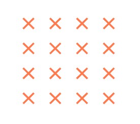
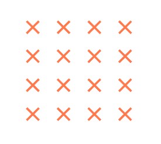

AMANDA CURZZEL
PERFIL
Busco novos desafios profissionais em que eu possa aplicar os conhecimentos que obtive em experiências anteriores, assim como nos constantes ciclos de atualização aos quais me insiro.
DADOS PESSOAIS
Endereço: Rua João Motta Espezim, 524 - Saco dos Limões, Florianópolis - SC, 88045-400
Disponibilidade: Período Integral
Contato: (48) 9 9605-2718 | amandacurzzel@gmail.com
FERRAMENTAS

HABILIDADES
- Organização
- Trabalho em equipe
- Comunicação
- Inglês (básico)
- Linux & Terminal
- Hardware
- Sistemas Oprecionais - Windowns/Linux/MacOS
Estou entrando no mercado de trabalho na área de tecnologia, tenho boas bases de Github, HTML, CSS e Javascript. Procuro sempre novos desafios e oportunidades de melhorar os meus conhecimentos. Tenho facilidade com trabalho em equipe e altas demandas.